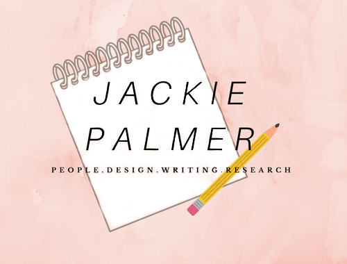

Hi, I'm Jackie!
I am an interaction designer with a passion for great user interfaces and experiences. I like making things and meeting new people. I study human computer interfaces and the psychology of human computer interaction. Besides the sheer joy I get from being able to create products that help in peoples' everyday lives, what I love about my work is that I am constantly learning about people and new technologies.
My experience being a designer started when I attended The Art Institute of Seattle to study fashion design. It is an ever-present draw to invention that I credit for my ability to not only build great web applications, but a fine pair of pants too. In art school I developed a multitude of visual design skills including skills in graphic design and illustration. This creative background gives me an eye for compelling and intuitive design.
mail: jackiemariep@yahoo.com
tel: 858 225 9463